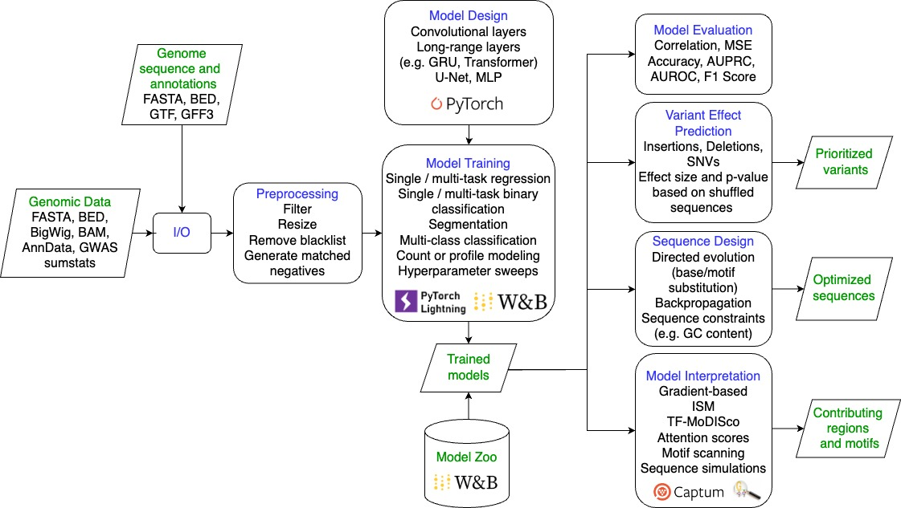

gReLU#
gReLU is a Python library to train, interpret, and apply deep learning models to DNA sequences. Code documentation is available here.

Breaking Changes in v1.1.0#
Model Zoo Migration: The gReLU model zoo has moved from Weights & Biases to HuggingFace. The grelu.resources API has changed:
# Old API (wandb) - still available at grelu.resources.wandb but will be removed in future
grelu.resources.load_model(project="human-atac-catlas", model_name="model")
# New API (HuggingFace)
grelu.resources.load_model(repo_id="Genentech/human-atac-catlas-model", filename="model.ckpt")
Browse the zoo at https://huggingface.co/collections/Genentech/grelu-model-zoo and see the Model Zoo Tutorial for updated usage.
Installation#
To install from source:
git clone https://github.com/Genentech/gReLU.git
cd gReLU
pip install .
To install using pip:
pip install gReLU
Typical installation time including all dependencies is under 10 minutes.
To train or use transformer models containing flash attention layers, flash-attn needs to be installed first:
conda install -c conda-forge cudatoolkit-dev -y
pip install torch ninja
pip install flash-attn --no-build-isolation
pip install gReLU
Contributing#
See our contribution guide.
Additional requirements#
If you want to use genome annotation features through the function grelu.io.genome.read_gtf, you will need to install the following UCSC utilities: genePredToBed, genePredToGtf, bedToGenePred, gtfToGenePred, gff3ToGenePred.
If you want to create bigWig files through the function grelu.data.preprocess.make_insertion_bigwig, you will need to install the following UCSC utilities: bedGraphToBigWig.
UCSC utilities can be installed from http://hgdownload.cse.ucsc.edu/admin/exe/, for example using the following commands:
rsync -aP rsync://hgdownload.soe.ucsc.edu/genome/admin/exe/linux.x86_64/bedGraphToBigWig /usr/bin/
rsync -aP rsync://hgdownload.soe.ucsc.edu/genome/admin/exe/linux.x86_64/genePredToBed /usr/bin/
rsync -aP rsync://hgdownload.soe.ucsc.edu/genome/admin/exe/linux.x86_64/genePredToGtf /usr/bin/
rsync -aP rsync://hgdownload.soe.ucsc.edu/genome/admin/exe/linux.x86_64/bedToGenePred /usr/bin/
rsync -aP rsync://hgdownload.soe.ucsc.edu/genome/admin/exe/linux.x86_64/gtfToGenePred /usr/bin/
rsync -aP rsync://hgdownload.soe.ucsc.edu/genome/admin/exe/linux.x86_64/gff3ToGenePred /usr/bin/
or via bioconda:
conda install -y \
bioconda::ucsc-bedgraphtobigwig \
bioconda::ucsc-genepredtobed \
bioconda::ucsc-genepredtogtf \
bioconda::ucsc-bedtogenepred \
bioconda::ucsc-gtftogenepred \
bioconda::ucsc-gff3togenepred
If you want to create ATAC-seq coverage bigWig files using grelu.data.preprocess.make_insertion_bigwig, you will need to install bedtools. See https://bedtools.readthedocs.io/en/latest/content/installation.html for instructions.
Citation#
Please cite our paper: https://www.nature.com/articles/s41592-025-02868-z
Lal, A., Gunsalus, L., Nair, S. et al. gReLU: a comprehensive framework for DNA sequence modeling and design. Nat Methods (2025). https://doi.org/10.1038/s41592-025-02868-z